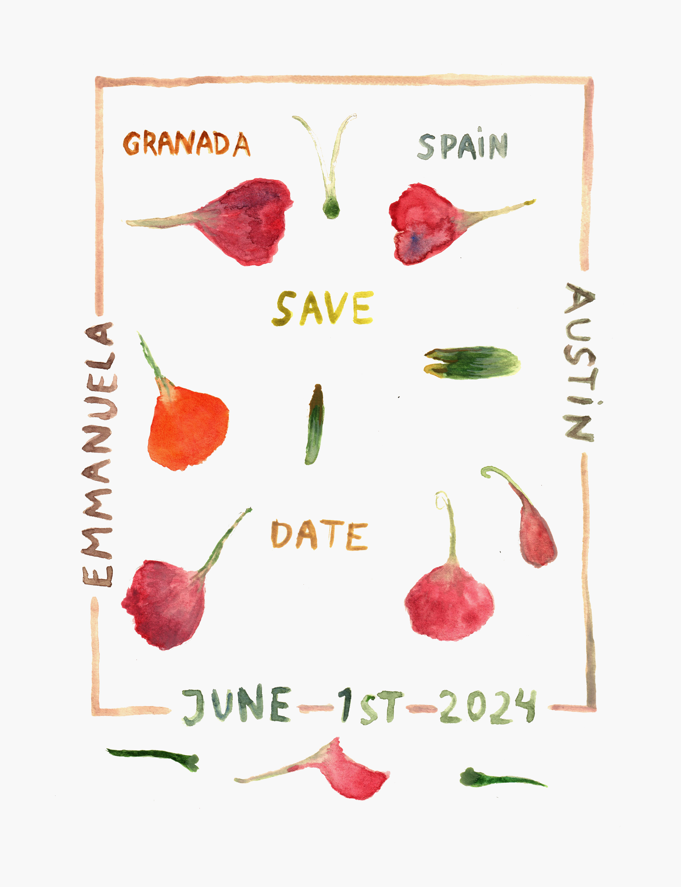

The Wedding of Emmanuela Soria Ruiz and Austin Mayer

When: Saturday, June 1st, 2024 2:00pm
Where: Granda, Spain
Hotels:
F.A.Q.
WHEN SHOULD I RSVP BY?
Please RSVP by January 1st 2024
WHERE DO I FLY TO GET TO GRANADA?
There are 2 options we recommend, which vary in price and convenience:
1. The most convenient option is to fly to the Granada airport (GRX) via Madrid or Barcelona.
2. The most affordable option is to fly to Madrid (MAD) and get a bus to Granada- this is a 5 hour long bus journey
so it is not the most convenient but the ride is pretty beautiful and the most affordable option. Here is the link
to get bus tickets
SHOULD I RENT A CAR?
Unless you're planning on taking day trips we do not recommend that you rent a car- you'll be staying at a
historical center of Granada, which means that traffic is restricted and parking is super annoying - on the other
hand, most everything is within a short walking distance or a short bus ride or taxi ride away!
WHY DO YOU RECOMMEND THAT I STAY IN GRANADA, AND NOT IN THE SMALL TOWN WHERE THE WEDDING WILL TAKE PLACE?
We think it will be more fun, beautiful and convenient for you to stay in Granada, a city full of beautiful views,
food and historical sites.
WHERE IS THE WEDDING/PARTY?
The wedding/ party will take place in a house in Huetor Santillán, which is a small town located approximately 8
miles from the center of town.
WHAT TIME SHOULD I ARRIVE AT THE CEREMONY?
Family should arrive at 6 for group photos, everyone else at 7
HOW SHOULD I GET TO THE WEDDING LOCATION?
There are 2 options:
1. Hail a Taxi or take an Uber- this will cost around 20€ Because you'll be staying at the city center, it will be
easy to hail a taxi on the street, otherwise call an Uber.
2. Take the public bus that comes exactly at 6pm and costs 2€ - this bus only comes every hour and a half, so if you
miss it, we recommend you take a taxi! Here is the location of the bus stop.
HOW DO I GET BACK TO MY HOTEL?
We will have a shuttle come by at 2am and 4am
WHAT SHOULD I WEAR?
Whatever you'd like! Austin and I will dress up, and the party will be a very colorful affair- we recommend that you
dress up in a way that makes you feel comfortable and that you dress for the warm wether. Dancing will take place on
grass, and there are some dirt roads so we do not recommend wearing stilettos or really delicate shoes.
ARE KIDS WELCOME?
Yes!